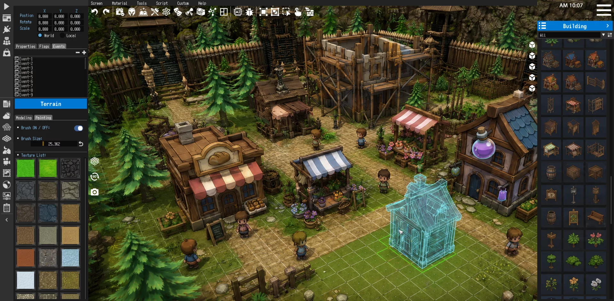
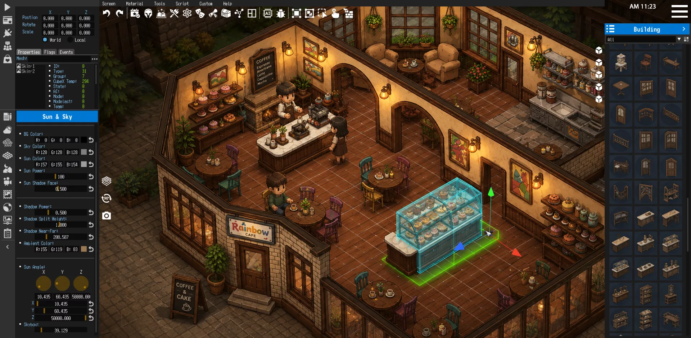
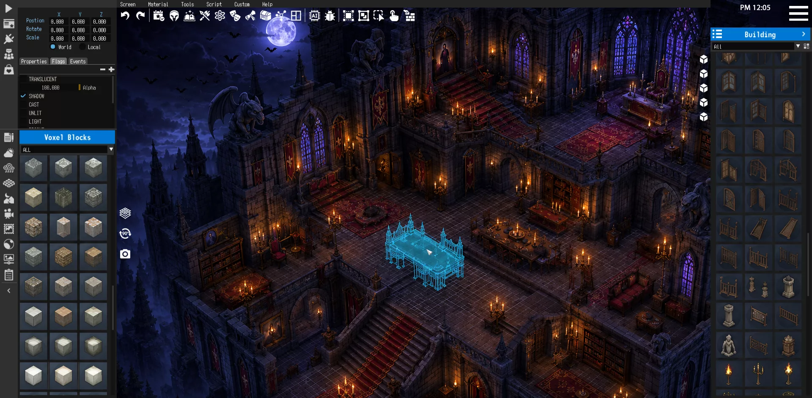
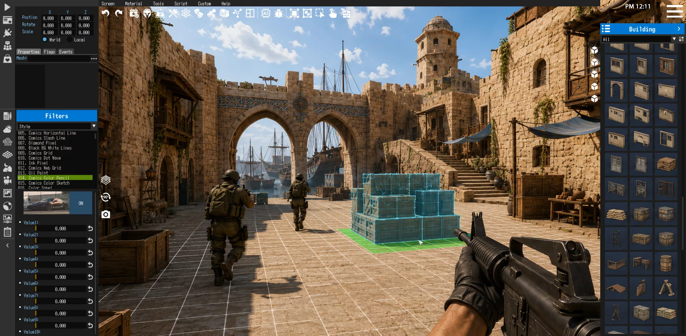
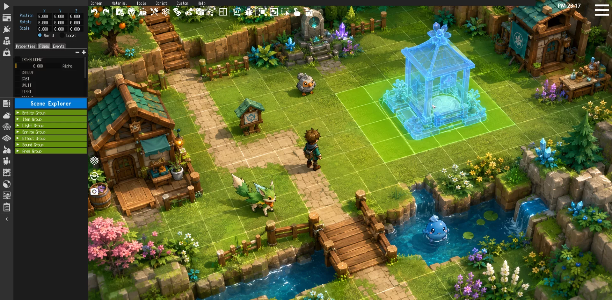
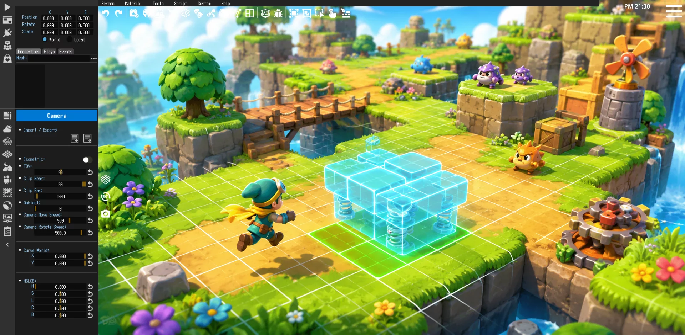
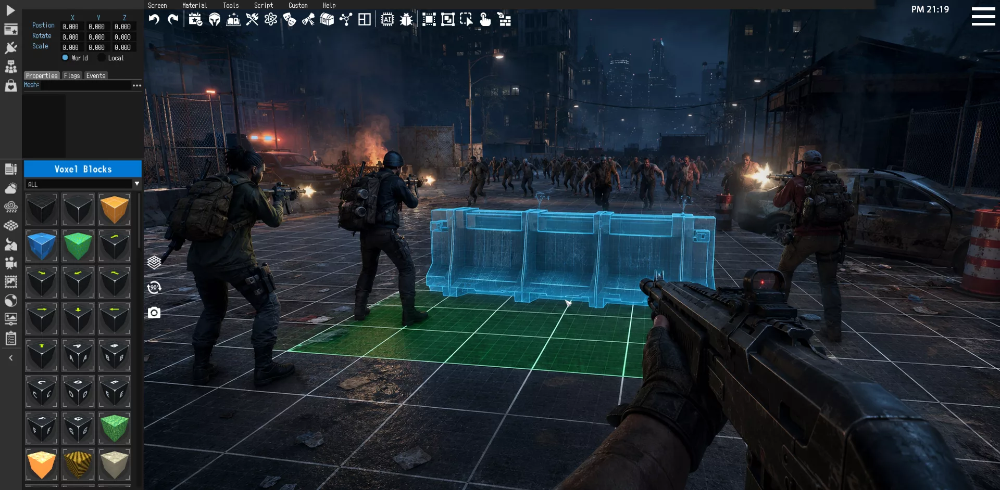
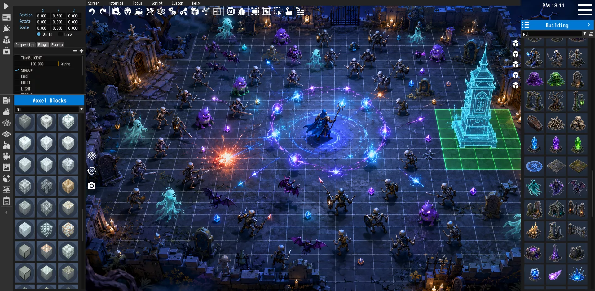
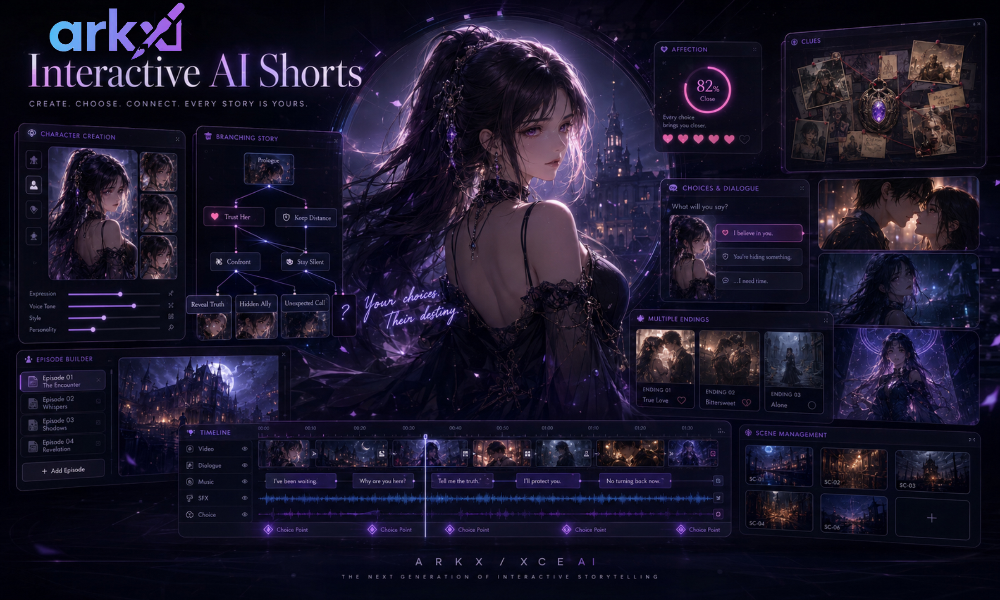

Ideas become systems
A story no longer has to stop at text. A character no longer has to stay inside an image. Emotion, relationship and inspiration can become interactive works.
Arkx is building a Creator OS for a new generation of AI-era creators — a lighter, faster way to turn stories, characters, scenes, gameplay and emotions into interactive digital works.
For years, turning an idea into a digital work required complex tools, specialist teams, asset budgets and long production cycles. AI changes the route. Generation, composition, interaction and publishing can now become lighter, faster and more open.
A story no longer has to stop at text. A character no longer has to stay inside an image. Emotion, relationship and inspiration can become interactive works.
Creators can prototype fast, publish into real ecosystems, read feedback, then continue growing the work instead of starting over.
Arkx does not decide what creators should make. It helps them cross the first gap from idea to playable, editable, publishable project.
AI-native creation tools should not build higher walls. They should make more capabilities usable by more creators.
Creators do not need heavier workflows for early validation. XCE AI is designed for shorter paths from idea to demo, vertical slice and shareable build.
AI helps users generate and organize 2D/3D assets, scenes, UI, effects, voices and music, while the editor keeps everything editable.
The system can read project structure, assets, scripts and scene objects, then continue generation or modification from the current context.
XCE AI supports visual editing, multi-platform export, independent publishing, community assets and ongoing iteration after user feedback.
XCE AI is a playable content generation platform for individual creators, UGC makers, small teams, university AI programs and enterprise marketing teams.
No full team, no art or 3D skills, no coding — use AI to generate assets, logic, levels and test results fast.
Want shareable, interactive content without complex tools — go from text or voice ideas to playable works and interactive dramas.
Few people, slow prototype validation — shorten demo, vertical slice and promotional asset production cycles.
Teaching often stops at theory or single-model labs — XCE AI connects model calls, agents, knowledge bases, interaction design and publishing in one practice environment.
Need interactive content but traditional development is costly — quickly generate brand mini-games, event experiences and launch demos.
XCE AI gives creators a lightweight interactive creation workspace. AI Native Generator extends it into interactive AI short dramas and playable narrative content.
XCE AI is an AI-native creation system that embeds AI into the core production chain of games and interactive short dramas.
creator.prompt "Create an interactive cyber-school mystery with 3 endings."
ai.pipeline assets → scenes → dialogue → events → tests → publish
build.status playable project generated · editable in workspace

Prompt to playable game project — assets, scenes, logic, testing and publishing in one editable production chain.

Generate characters, scenes, video, voice, choices, relationship states and multi-ending interactive stories.
From map to playable scene — watch the creation flow.
It is not a traditional game editor, not a single-format generation tool, and not another traffic-heavy closed platform. It is a playable content generation platform for individual creators, small teams, university AI teaching and enterprise production — turning stories, characters, scenes, gameplay and expression into editable, runnable, testable and publishable works.
AI output lands in a visual, editable, runnable project — not a pile of uncontrollable files.
AI generation + built-in assets + parametric composition — more stable than pure AIGC, easier to ship playable content.
WYSIWYG editing — AI doesn't just advise, it operates inside the project while you keep full control.
One-click publishing on Steam, Windows, Linux/SteamOS and Android — the foundation for templates, assets and AI creation ecosystems.

C++ editor · no-code · visual events · TypeScript API · multi-platform publishing
XCE AI uses AI to generate and organize 2D/3D assets, characters, actions, CG animation, effects, music, voice, game logic, automated tests, tuning suggestions and feedback analysis.

Compose large-scale environments in the live editor — navigate scenes, place objects and iterate layouts in real time.

Top-down editing for terrain, buildings and scene layout with precise placement tools and instant visual feedback.

Build colorful, character-driven scenes across 2D and 3D styles from a unified workspace.

Author action flows, combat beats and narrative triggers inside playable scenes.

Tune mood, lighting and environment details for immersive nighttime worlds.
Text, reference images, voice and project context are transformed into clear production tasks.
2D/3D assets, UI, characters, scenes, actions, effects, music, sound and voice enter the project asset system.
AI generates XCE AI DSL, visual events, components, dialogue nodes, conditions, variables and endings.
AI player agents check branches, reachability, interaction flows and numeric balance, then return practical fixes.
Playable projects can be exported, tested with users and improved through feedback-driven iteration.
Interactive AI short drama is the natural extension of XCE AI's game creation capability. Scripts, characters, scenes, video, voice and music become content foundations; dialogue editing, event systems, state variables and publishing become the interaction carrier.

Story choices, clue exploration, relationship states, QTE moments, puzzles, resources, simple battles and AI character dialogue can all affect the following story state.
World settings, characters, chapters, conflict, dialogue and endings enter dialogue editing and narrative projects.
Characters, outfits, expressions, props, scenes and style references become reusable assets across shots and branches.
Keyframes, clips, voice, music and sound effects are generated and bound to scenes and story nodes.
Choices, conditions, variables, affection levels, items, clues and endings are configured through dialogue, events and components.
Market research from game and AI drama creators reveals recurring pain points — XCE AI connects expression, generation, organization, testing, modification and publishing into one chain.
A seven-layer stack connects user intent to published playable projects.
Text, voice, image/video references, project context and operation logs.
Main Agent, RAG, Tool Calling, model routing and safety controls.
2D, 3D, video/animation, TTS, STT, music and sound effects.
XCE DSL, event components, dialogue graphs, branches, variables and balance systems.
Asset library, scenes, scripts, components, Asset Cards and version management.
AI players, interaction tests, branch tests, balance checks and optimization suggestions.
Windows, Linux/SteamOS, Android, Steam Workshop and UGC ecosystems.
The orchestration layer plans and schedules; multimodal models generate; XCE carries and lands projects; test agents verify.
Creators & university teaching
Small models, quantized models, local STT/TTS and lightweight image generation.
Indie teams & professional creators
RTX 4090/5090 or multi-GPU setups running full LLM, image, video and 3D generation.
Enterprises, universities & studios
Private GPU servers, multi-user queues, permissions, asset libraries and audit trails.
XCE AI uses AI to lower the creation threshold, an editable project environment to carry playable works, UGC to scale supply, and publishing mechanisms to support sustained commercialization.
Subscriptions, AI rendering credits, advanced templates, asset packs and publishing tools for individuals, students and indie creators.
Templates, characters, UI kits, effects, scripts, prompts, workflows and tutorial projects with platform revenue share.
An AI playable content creation and practice platform for higher education — from model calls and agents to interactive apps and publishing.
Brand mini-games, interactive dramas, event experiences, launch demos, simulations, training games and IP collaboration content.
Vertical slices, pitch demos, Steam page materials, concept assets, whitebox levels, balance tests and entertainment MVPs.
XCE AI targets AI, computer science, digital media, game design and educational technology programs — integrating model calls, agent design, knowledge bases, interactive logic, digital content and multi-platform publishing into one practice environment.
Contact"Not Prompt to Image. Not Prompt to Video. Prompt to Playable Game Project."
Arkx product thesis
Reach out for partnerships, early access, university curriculum collaboration, AI practice lab co-building, education licensing or enterprise interactive content projects.